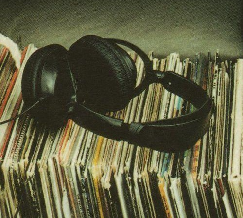
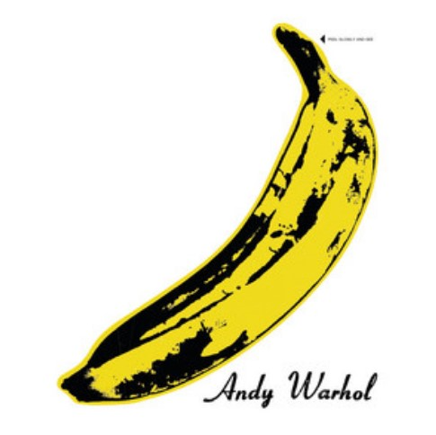
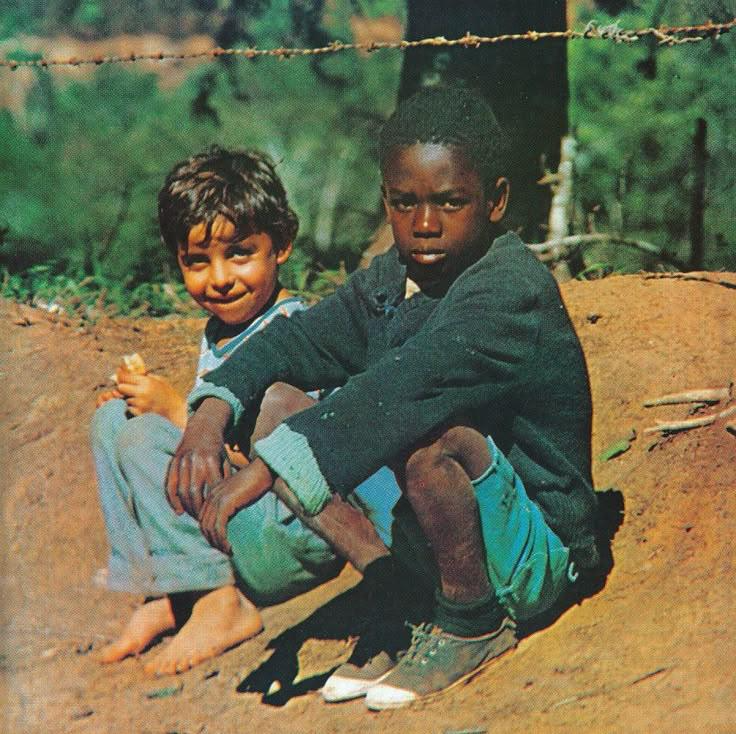
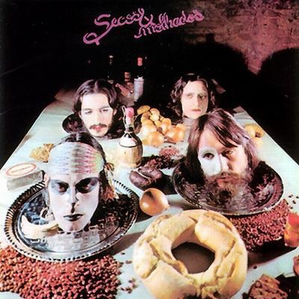
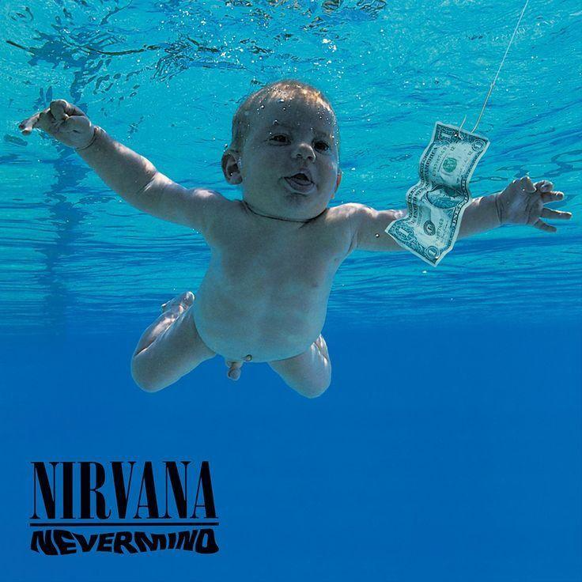

Sobre o Projeto
O "Memória em Vinil" foi criado com o objetivo de preservar e valorizar a história dos discos de vinil, promovendo um resgate cultural e emocional de uma era marcante da música.
Para muitos, isso representa uma conexão afetiva com momentos da vida, com pessoas queridas e com épocas inesquecíveis. Em tempos modernos, onde o streaming domina e a música se tornou um produto de consumo rápido, sentimos a necessidade de oferecer um contraponto: um espaço onde a beleza da arte analógica pudesse ser celebrada. Nosso objetivo é também quebrar a ideia de que o vinil é coisa do passado — pelo contrário, ele continua relevante e encantando novas gerações.
"O disco de vinil carrega mais do que música: ele traz memórias, histórias e sentimentos que atravessam gerações."

O vinil proporciona uma experiência sensorial completa que exige tempo, atenção e presença. Cada etapa — desde a escolha do álbum, a leitura da capa, até o ato de colocá-lo para tocar — convida a uma conexão mais profunda com a música.
Cada vinil conta uma história única: seja um clássico mundial ou uma relíquia encontrada em um sebo de bairro. O "Memória em Vinil" é um espaço de troca, descoberta, celebração e preservação. Seja bem-vindo e aproveite.
Qualidade Sonora
Som analógico contínuo, sem compressão digital.
Memória Afetiva
Cada disco carrega uma história e uma emoção única.
Arte & Cultura
Capas icônicas que marcaram a história visual da música.
Resistência Cultural
O vinil sobreviveu ao digital e une gerações.
Por que o Vinil?
Em uma era dominada pelo digital, o vinil ressurge como referência de qualidade, com um som que audiófilos descrevem como mais "quente", rico e envolvente.
Diferente dos arquivos digitais, que comprimem dados sonoros e amostram o áudio em taxas fixas, o vinil é um meio analógico: registra a forma de onda sonora de maneira contínua. A agulha do toca-discos percorre os sulcos esculpidos na superfície de PVC, traduzindo diretamente as variações de pressão do som original — sem conversão para dados binários.
Por que soa diferente?
O vinil evita o fenômeno do aliasing e mantém a integridade das transientes — os detalhes iniciais de cada nota — essenciais para a naturalidade de instrumentos acústicos e vocais.
Ouvir um disco exige tempo, cuidado e ritual: tirar o vinil da capa, colocá-lo no toca-discos, abaixar a agulha, virar o lado. Cada gesto conta uma história e traz de volta um tempo em que a música era o centro das atenções — não um som de fundo.
Para os que buscam mais do que conveniência — buscam emoção —, o vinil continua imbatível.
O vinil une gerações: pais e filhos compartilhando discos, jovens descobrindo clássicos, artistas atuais lançando seus álbuns em LP como forma de validar suas obras dentro de uma tradição rica e admirável.
Influência Cultural
O vinil não apenas reproduz música — ele molda culturas inteiras. Desde os primeiros long-plays dos anos 1950, o disco se tornou um dos maiores veículos de expressão artística e transformação social da história moderna.
Ao longo das décadas, o vinil foi palco de movimentos culturais que redefiniriam o mundo. O rock dos anos 1960, com Beatles e Rolling Stones, transformou a vida de jovens ao redor do planeta. A Tropicália brasileira, com Caetano Veloso, Gilberto Gil e os Mutantes, usou o vinil para misturar vanguarda e tradição em uma das manifestações mais criativas da nossa cultura. O soul, o funk e o hip-hop encontraram no vinil sua principal ferramenta de resistência e identidade.
A Arte da Capa
A capa do disco virou obra de arte por si só. Designers, fotógrafos e artistas plásticos passaram a ser parceiros fundamentais na criação dos álbuns. No Brasil, artistas gráficos da tropicália transformaram as capas em manifestos visuais de uma geração. Hoje, em tempos de streaming, o charme e o impacto visual dos LPs seguem vivos.




Preservação
A limpeza correta dos discos de vinil é etapa crucial para manter a qualidade sonora e proteger tanto o disco quanto a agulha do toca-discos.
Poeira, gordura e partículas em suspensão acumulam-se nos sulcos, causando estalos, chiados e acelerando o desgaste da agulha. Conheça os dois métodos essenciais:
Escova de Fibra de Carbono
Faça antes e depois de cada audição. A escova alcança as partículas nos sulcos e dissipa cargas estáticas que atraem poeira. Movimento circular, acompanhando os sulcos, sem pressão excessiva.
Limpeza Úmida Profunda
A cada poucos meses, ou ao notar perda de qualidade. Use solução específica para vinil ou água destilada com detergente neutro — nunca álcool comum.
- Aplique com pano de microfibra limpo e sem fiapos.
- Nunca molhe o rótulo central do disco.
- Enxágue com água destilada para remover resíduos.
- Seque com outro pano e deixe secar na vertical.
💡 Para colecionadores sérios
Máquinas de limpeza por vácuo ou ultrassom garantem limpeza profunda e segura, removendo até partículas microscópicas dos sulcos.
Armazenamento & Manuseio
Posição Vertical
Guarde sempre na vertical. O peso acumulado em pilhas pode deformar os discos.
Capas Protetoras
Capas internas antiestáticas de polietileno e externas de polipropileno.
Temperatura & Umidade
Local fresco, seco e longe da luz solar. Variações bruscas deformam os discos.
Manuseio Correto
Segure sempre pelas bordas e pelo selo central. Evite contato com os sulcos.
Relatos de Colecionadores
Colecionar discos de vinil vai muito além de um simples passatempo. Para muitos, é uma forma de reviver memórias, se conectar com histórias e mergulhar em um universo onde a música é vivida com todos os sentidos.
Leandro Ferreira
28 anos · Fundador"Desde criança, meu pai colocava discos pra tocar enquanto arrumava a casa nos domingos. Cresci ouvindo clássicos do rock, MPB e soul, e aquilo ficou marcado em mim. Aos 18 anos, comprei meu primeiro vinil em um sebo — nem tinha toca-discos ainda, mas eu precisava levar aquele álbum pra casa. Hoje, minha coleção tem mais de 300 discos, e cada um tem uma história."
Marcela Dantas
34 anos · Fundadora"Eu comecei por curiosidade. Sempre gostei de música, mas era tudo no digital. Um dia, vi uma feira de discos de rua, peguei um vinil do Caetano Veloso, e a capa me encantou. Hoje, o que era curiosidade virou paixão. O mais bonito: o vinil me trouxe pessoas. Amizades, trocas, momentos."
Renato Lima
42 anos · Fundador"Ganhei uma caixa com discos antigos do meu avô, que tinham ficado esquecidos no sótão. Quando coloquei um deles pra tocar, senti algo que fazia tempo que não sentia ouvindo música. O vinil exige presença — você precisa parar, prestar atenção, virar o disco. Em um mundo tão corrido, ouvir vinil é quase um ritual."